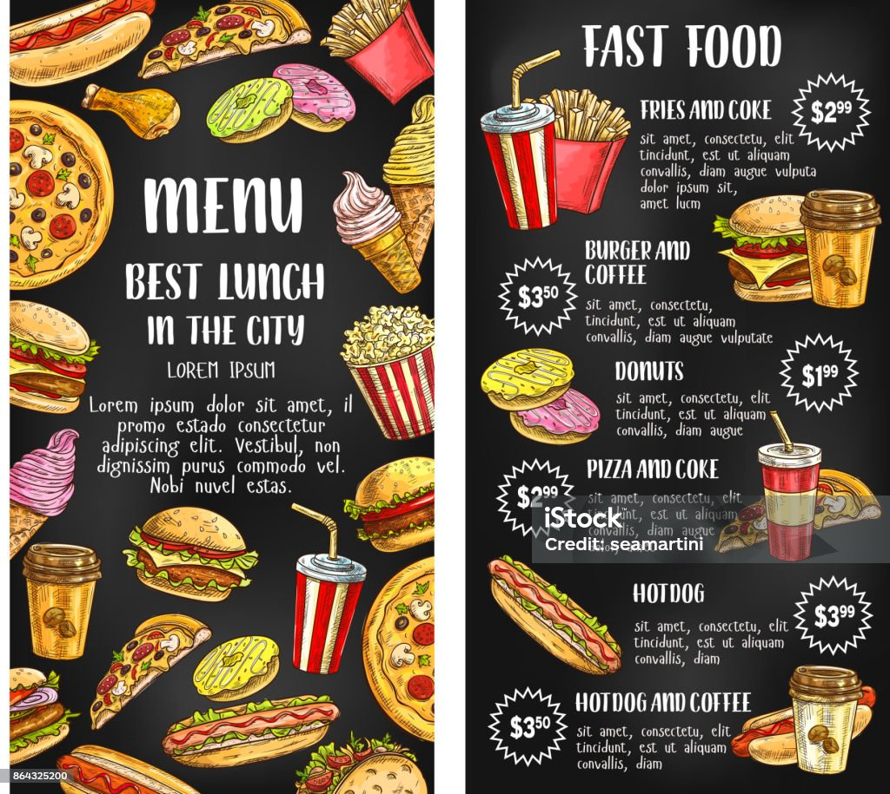

<!DOCTYPE html>
<html>
  <head>
    <title>AR Menu</title>

    <!-- A-Frame -->
    <script src="https://aframe.io/releases/1.4.2/aframe.min.js"></script>

    <!-- MindAR -->
    <script src="https://cdn.jsdelivr.net/npm/mind-ar@1.2.5/dist/mindar-image-aframe.prod.js"></script>

   <style>
  html, body {
    margin: 0;
    padding: 0;
    width: 100%;
    height: 100%;
    overflow: hidden;
  }
<div id="startScreen" style="
  position: fixed;
  inset: 0;
  background: white;
  z-index: 10;
  display: flex;
  flex-direction: column;
  align-items: center;
  justify-content: center;
  text-align: center;
  padding: 20px;
">
  <h2>Scan the menu to see it in AR</h2>

  

  <button onclick="startAR()" style="
    padding: 14px 24px;
    font-size: 16px;
    border: none;
    border-radius: 10px;
    background: black;
    color: white;
  ">
    Start AR
  </button>
</div>
     a-scene {
    width: 100%;
    height: 100%;
  }
</style>
  </head>

  <body>
      <a-scene
  mindar-image="imageTargetSrc: targets.mind; autoStart: false;"
  vr-mode-ui="enabled: false"
  device-orientation-permission-ui="enabled: false"
  embedded
  style="visibility: hidden;"
>

      <a-camera position="0 0 0" look-controls="enabled: false"></a-camera>

      <!-- Image marker target -->
      <a-entity mindar-image-target="targetIndex: 0">

        <!-- Burger image -->
        <a-image
          src="./burger.jpg"
          position="0 0 0"
          scale="1 1 1"
          rotation="0 0 0"
        ></a-image>
<script>
  function startAR() {
    document.querySelector("#startScreen").style.display = "none";

    const scene = document.querySelector("a-scene");
    scene.style.visibility = "visible";

    scene.components["mindar-image"].start();
  }
</script>
      </a-entity>
    </a-scene>
  </body>
</html>


